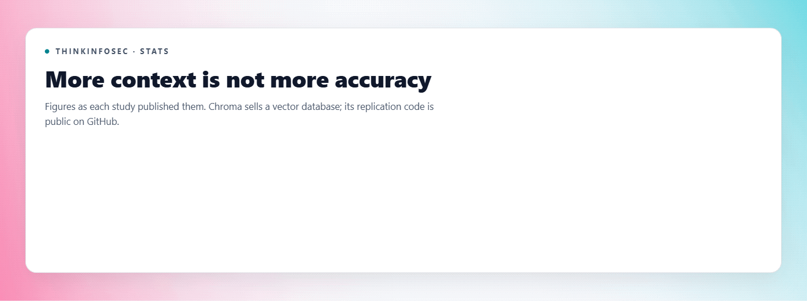
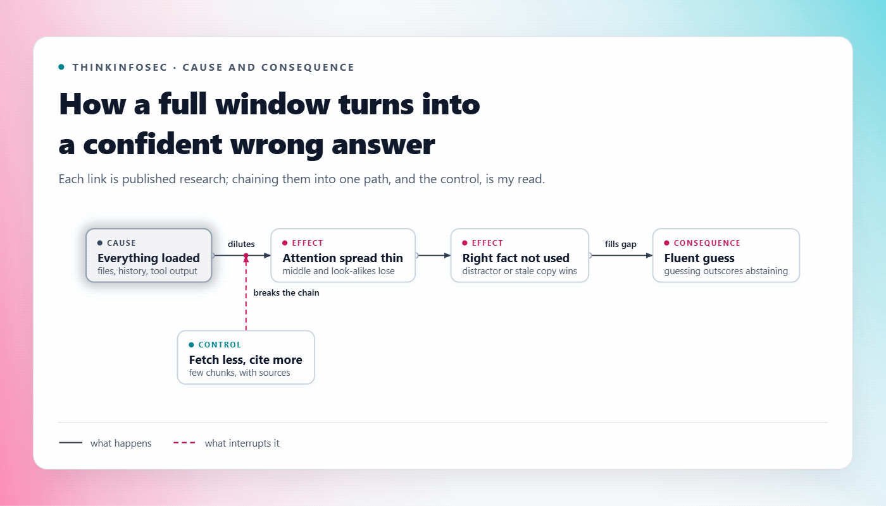
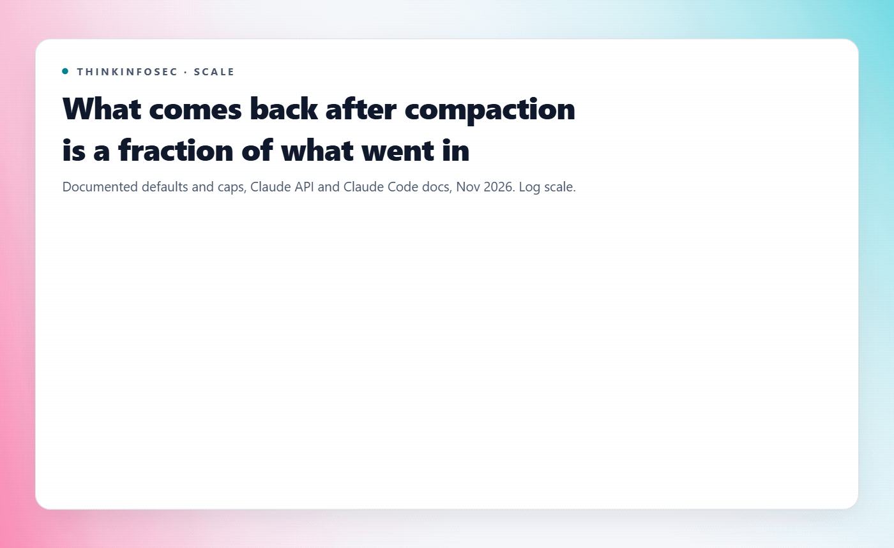
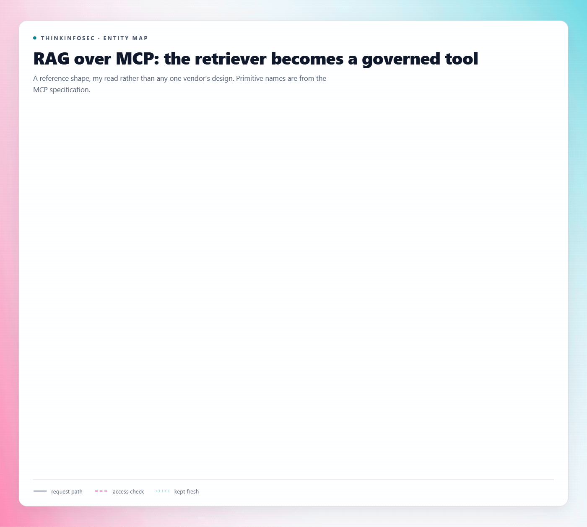
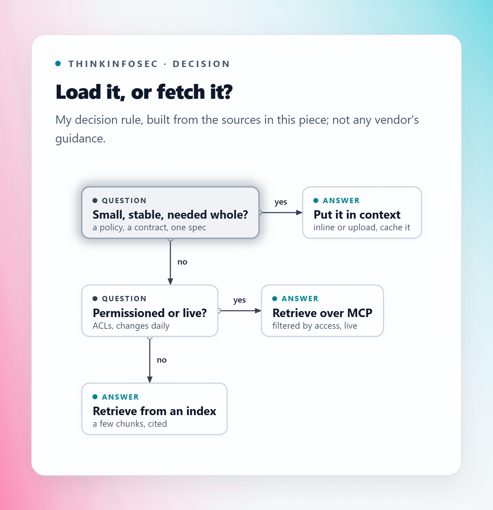

The question
Upload it, or let the agent go and get it?
Most of my working weeks lately start the same way. I'm an SE at CrowdStrike, and a big part of my job right now is helping customers get started with Charlotte AI AgentWorks, which CrowdStrike describes as “a no-code workspace within the Falcon platform for building, deploying, and managing custom AI security agents”. CrowdStrike positions it for security operations centre (SOC) work such as detection triage, phishing analysis, threat hunting and reporting. Underneath every one of those agents sits the same design question. What does this agent know, and where does it get it from?
(Quick disclosure, since CrowdStrike comes up below: I work there. The views here are mine, not my employer's, and everything I cite is public.)
That question has just got a lot more weight, because Gartner has named the category. If you haven't met one, a Gartner Magic Quadrant plots the vendors in a market on two axes: Ability to Execute (can they deliver today) and Completeness of Vision (do they understand where the market is going). That splits the field into four boxes. Leaders sit top right, Challengers top left, Visionaries bottom right and Niche Players bottom left. It's analyst opinion rather than a benchmark, and Gartner says plainly that it “does not endorse any vendor, product or service depicted in its research publications”, but it's the map most buyers walk into a meeting with. On 24 November 2026 Gartner published its first ever Magic Quadrant for Integrated Security Operations Center Systems (ISOC), by Angel Berrios, Kevin Schmidt and Eric Ahlm. CrowdStrike's announcement the next day says the company was named a Leader, “positioned furthest right for Completeness of Vision and highest for Ability to Execute among all vendors evaluated”, and frames the new market as “SIEM, EDR, threat intelligence, and AI SOC agents, delivered as one integrated system”. That's CrowdStrike describing its own placement a day after the report landed, so I haven't seen independent coverage yet. The part I find most interesting is that “AI SOC agents” are now one of the things the category is defined by.
The line from that release that stuck with me came from AJ Shipley, CrowdStrike's chief product officer: “an agent is only as good as the data it operates on.” That's the whole of this piece in one sentence. And it's not an abstract point for AgentWorks: CrowdStrike's product page says it connects platform data, models and third-party tools “backed by the model context protocol (MCP)”. So whether a SOC agent gets its knowledge front-loaded or fetched over MCP is a design decision customers are making right now, on real detections.
It's also the foundation I keep coming back to outside work. I'm studying for the Claude Architect certification, and a lot of my reading for it has been about MCP and what goes into a model rather than the model itself. I'm building a lot of solutions with AI on the side, too, and the deeper I get, the more I think the most consequential design decision in an agent isn't which model you pick. It's how knowledge reaches it. The obvious first instinct, and it was mine, is: “Why not just upload all the documentation and let it answer from that?” It sounds like the safe option. The model reads your stuff, so it can't make things up. Right?
It's not right, or at least not reliably. So let's pull the question apart properly. There are three things I wanted answers to. Why does loading more context lead to more hallucination, not less? What actually happens when a long session runs out of room and the agent compacts itself? And why is fetching over MCP, usually as part of a retrieval-augmented generation (RAG) design, the better default for most of what we hand to agents?
One thing up front, because a technical reader will rightly call it out otherwise. MCP results are context too. Every tool result lands in the same window as everything else (I covered that loop in Your agent is not the model). So this isn't really “context versus MCP”. It's front-loading everything versus fetching what the task needs, when it needs it, and MCP happens to be the standard plumbing for the second one.
Three ways in
Three ways knowledge reaches an agent
Let's get the vocabulary straight, because these get blended all the time.
Inline context is anything you paste into the prompt or the system prompt. It's in the window from turn one, every token of it, whether the task needs it or not.
File uploads look different but are often the same thing. Attach a PDF to a chat or drop documents into a project, and in the simple case the text gets extracted and placed in the window. The nuance worth knowing: platforms quietly switch strategies once you upload enough. Anthropic's help centre says that when project knowledge approaches the context window limit, Claude “will automatically enable RAG mode”, retrieving relevant passages through a project knowledge search tool instead of loading everything (per its RAG for Projects article, which also claims capacity grows “by up to 10x”, a vendor number that gets the usual discount). I think that's the most honest signal in this whole topic. The vendor itself stops stuffing the window at a threshold and starts retrieving instead.
Fetching through tools, usually over MCP, means the agent starts with almost nothing but a list of what it can ask for. When the task needs a document, a ticket or a database row, it calls a tool, and only the result comes back. Anthropic calls this the “just in time” approach in its Effective context engineering for AI agents post (September 2025): agents “maintain lightweight identifiers (file paths, stored queries, web links, etc.)” and load data “at runtime using tools”.
The difference between the first two and the third isn't really where the bytes end up. It's who decides what's in the window: you, once, at the start, or the agent, per step, based on what it's actually doing.
The rot
Why more context makes models worse
The intuition that “more context means better answers” is wrong in a specific, measurable way. Anthropic's own framing is that models have an “attention budget” that they “draw on when parsing large volumes of context”, and every token you add spends some of it. Three bodies of research show what that looks like.
Position matters. The paper that started this conversation is Lost in the Middle (Liu et al., TACL 2024). Put the relevant document at the start or the end of a long input and models find it. Put it in the middle and performance “can degrade significantly”, giving the now-famous U-shaped curve. The finding I find more useful for agent design is buried further in: going from 20 retrieved documents to 50 only improved accuracy by about 1.5% for GPT-3.5-Turbo and about 1% for claude-1.3. Two and a half times the tokens, for a rounding error.
Length alone matters. Chroma's technical report Context Rot (14 July 2025) tested 18 models, including GPT-4.1, Claude 4, Gemini 2.5 and Qwen3, holding the task constant and changing only how long the input was. Performance got less reliable as input grew, even on trivial tasks. Two details from that report matter for anyone loading documents into an agent. First: “Even a single distractor reduces performance relative to the baseline”, and four distractors compound it. Second: “as needle-question similarity decreases, model performance degrades more significantly with increasing input length.” In plain terms, the more your question is phrased differently from the text that answers it, the worse long context gets. Which is most real questions. (Worth the caveat that Chroma sells a vector database, so it has a horse in the retrieval race. It also published its replication code, which is more than most.)
Conversation length matters. LLMs Get Lost In Multi-Turn Conversation (Laban, Hayashi, Zhou and Neville, May 2025) found every top model they tested performed worse when a task was spread over multiple turns, an average drop of 39% across six generation tasks. The mechanism is the part that should worry agent builders: models “make assumptions in early turns and prematurely attempt to generate final solutions, on which they overly rely”. An agent session is one very long multi-turn conversation with itself.

Nobody fully knows why yet. Chroma's report is candid that the mechanism is unresolved, and attention behaviour is the likely suspect rather than a proven one. But for design purposes the why matters less than the shape: past a certain point, adding context is a cost, not a free safety margin.
The guess
From a full window to a confident wrong answer
Degraded recall on its own isn't hallucination. A model that can't find the answer could just say so. The second half of the explanation comes from a different paper.
OpenAI's Why language models hallucinate (September 2025) argues that hallucinations persist because training and evaluation reward guessing over admitting uncertainty. Their example is a birthday: guess a date and you've a one-in-365 chance of scoring, say “I don't know” and you're guaranteed zero. Optimise a model against accuracy-only leaderboards for long enough and you get a very good test-taker, one that would rather produce something plausible than abstain.
Now put the two findings together. This next bit is my read, not a claim either paper makes: a full window doesn't just hide the right fact, it surrounds it with near-misses. The previous version of the policy you uploaded last quarter. A similar clause from a different contract. Yesterday's tool output that's since gone stale. When the right passage gets underweighted, the model doesn't fall silent. It reaches for the nearest plausible text, and the training incentive turns that into a fluent, confident answer.

And here's what makes it a security problem rather than just a quality one. A hallucination grounded in uploaded material looks more trustworthy, not less. It uses your terminology, quotes your document names, sometimes cites a section that exists but doesn't say what the answer claims. The person reading it has every reason to believe it, because they gave the model the source. In a security operations context (a runbook, a policy exception, a remediation step) that's the expensive kind of wrong.
That's why the control on the diagram is “fetch less, cite more”. A handful of relevant chunks with their source attached gives the model less to confuse and gives the human something to check.
Compaction
What happens when the window fills up
Long-running agents hit the wall eventually, and every serious harness has an answer. Anthropic describes compaction in that same context engineering post as summarising a conversation nearing the window limit and starting a fresh window with the summary. Its API documentation puts it in one line: “Compaction replaces the older turns of a conversation with a summary that Claude writes on the server.” Per the docs, server-side compaction triggers at 150,000 input tokens by default, configurable down to 50,000.
It's genuinely useful. It's also lossy by design, and the same Anthropic post says so plainly:
overly aggressive compaction can result in the loss of subtle but critical context
with the post adding that such context's importance “only becomes apparent later”. That's the core risk in one sentence. The model deciding what to keep doesn't yet know what the task will need in an hour.
The mechanics are worth reading closely, because they decide what survives. On the API side, the docs say “The API automatically drops all content blocks prior to the compaction block”, and that thinking blocks from before it aren't carried forward. In Claude Code, the context-window docs include a table of what survives. Project-root CLAUDE.md and unscoped rules are “Re-injected from disk”, as is auto memory. Invoked skills come back capped at 5,000 tokens each and 25,000 in total. For files, Claude Code “re-reads up to five, most recently modified first”. But path-scoped rules and nested CLAUDE.md files load into message history, “so compaction summarizes them away with everything else”, and context that hooks added earlier is “Summarized with the rest of the conversation”.
Full credit to Anthropic for documenting this in detail. Most products don't. But read that table as a security person and a pattern jumps out. What survives compaction depends on where an instruction came from, not on how important it was. A rule in the root CLAUDE.md comes back verbatim. The same rule typed into the chat halfway through a session (“don't touch the production config”) only survives as well as the summary chooses to keep it. (There's even a user-filed GitHub issue reporting root CLAUDE.md content being summarised rather than re-injected. It's one report that conflicts with the docs, so I'd treat it as a possible bug, not the design.)
And look at the size of what comes back compared with what went in.

That gap is exactly why front-loading is fragile in long sessions. If you uploaded a 100-page standard at the start, by the time compaction fires it exists only as whatever the summary said about it. An agent built to fetch can just fetch it again. An agent built on a stuffed window has to trust its own notes.
The laundering
Compaction as a security boundary nobody owns
This is the section I didn't expect to write, and it's my own read rather than anything a vendor has said.
Compaction is a model rewriting its own memory. Everything in the window goes in: your instructions, your files, and every tool result, web page and MCP response the agent pulled in along the way. What comes out is a summary with no marking of which parts came from where. That has two consequences.
Untrusted content can be laundered into trusted memory. Say a web page or a poisoned README carried an injected instruction, and the agent read it. Before compaction, that text sits in a tool result. After compaction, a paraphrase of it may sit in the summary, alongside your genuine instructions, with nothing to show it came from outside. The provenance is gone. If you've read my earlier piece, this is the “context and memory hygiene” control point that none of the four security vendors I reviewed documented. Compaction is where that gap gets concrete.
Safety rules can quietly fade. The mirror image. A guardrail you added mid-session, or one a hook injected, gets summarised. Summaries compress, and compression favours the main task over the side-constraints. The rule isn't deleted on purpose. It just isn't what the summariser thought was important.
Neither of these needs a bug or an attacker with special access. They're properties of the design, the same way prompt injection is a property of the loop. The practical answer is to keep anything that must survive in places that are re-injected from disk, and to keep untrusted content out of the long-lived window in the first place. Which brings us to fetching.
Why fetch
Why MCP-based fetching is the better default
MCP is an open protocol for connecting models to tools and data. The current specification (the latest revision on modelcontextprotocol.io, which links the 2026-07-28 schema) defines servers that expose a few primitives. The two that matter here: Resources, “Context and data, for the user or the AI model to use”, and Tools, “Functions for the AI model to execute”. A retrieval server can offer both, a search tool the model calls and resources the application can attach.
Token efficiency is the argument you'll hear first, and it's real. But it isn't the strongest one. For a security audience the better argument is about what an uploaded file loses that a fetched one keeps.
Freshness. An upload is a snapshot. The moment you attach the runbook, it starts going stale, and nothing tells the model when it has. A fetch reads the current version.
Access control. This is the big one. A document in SharePoint or Confluence has permissions. The moment someone exports it and uploads it to a shared project, those permissions are gone, and anyone who can talk to that project can now get at its contents through the model. A retrieval server behind MCP can check who's asking and return only what that identity is allowed to see. The MCP specification's authorization section builds on OAuth 2.1 for HTTP-based transports, which is what makes that identity-aware fetch possible in a standard way. Worth knowing that the same page marks authorisation as “OPTIONAL”, so a server that skips it is still spec-compliant. Check before you connect one.
Provenance. A fetched chunk can carry its source: the document, the section, the timestamp. That's what lets the model cite and lets a human check the citation. Pasted text has no address.
Audit. Every tool call is an event you can log: who asked, what was retrieved, when. Nobody gets a log line when a model reads page 47 of an upload.
A smaller, cleaner window. And yes, the efficiency. Fewer tokens means fewer distractors, which is the whole lesson of the rot section. Anthropic's Code execution with MCP post (November 2025) takes this further: instead of passing every intermediate result through the model, where “Every intermediate result must pass through the model”, the agent writes code against MCP servers so that “intermediate results stay in the execution environment by default”. Anthropic's own worked example says this “reduces the token usage from 150,000 tokens to 2,000 tokens—a time and cost saving of 98.7%”. That's one example from the company that makes the model, so standard vendor discount applies. An independent test by AIMultiple measured a smaller but still large reduction, 78.5% fewer input tokens on its own workload. Direction confirmed, magnitude depends on the job.
Notice what that post also admits, though. MCP done naively bloats the window too: load every tool definition from every server up front and dump every result straight into context, and you've rebuilt the stuffed window with extra steps. MCP gives you the option of just-in-time context. You still have to design for it.
The cost
MCP is not a free lunch
It would be a strange security briefing that sold MCP as the safe option and stopped there. Fetching swaps one set of risks for another.
The spec itself is clear on the main one. In its tool safety guidance, “descriptions of tool behavior such as annotations should be considered untrusted, unless obtained from a trusted server.” Invariant Labs showed why on 1 April 2025 with its tool poisoning disclosure: malicious instructions hidden in a tool's description, which the model reads and the user never sees, used to pull SSH keys and config files in a demo. CyberArk's follow-up, Poison everywhere, extended the idea from descriptions to the whole tool schema and to tool outputs, and to “rug pulls” where a server changes a tool after you've approved it.
And every MCP server you connect adds to Simon Willison's lethal trifecta: private data, untrusted content, and a way to send data out. A retrieval server is usually the private-data leg. Connect a web-fetch server to the same agent and you've added the untrusted-content leg. Give it email or an HTTP tool and the trifecta is complete.
So the honest comparison isn't “risky uploads versus safe MCP”. It's that uploads fail silently: stale data, lost permissions, no log, poisoned summaries. MCP fails in places you can see and govern: a server you can allow-list, a call you can log, a response you can inspect before it re-enters context. I'll take the risk I can put a control on.
RAG over MCP
How MCP fits a RAG architecture
Retrieval-augmented generation goes back to Lewis et al. in 2020: rather than hoping the model memorised a fact, retrieve relevant passages from an external index and give them to the model alongside the question. The classic pipeline is fixed: chunk your documents, embed the chunks, store them in a vector index, and at query time retrieve the top few and paste them into the prompt.
What MCP changes is where retrieval sits. In a classic RAG app, retrieval is hard-wired code that always runs before the model sees the question. In an agent, retrieval becomes a tool the model chooses to call, possibly several times, with refined queries, as it works out what it actually needs. People call this agentic RAG. MCP is what makes that retriever a standard, swappable, governable component rather than glue code inside one app.

Let's walk it. The user asks the agent harness a question. The harness, acting as the MCP client, calls the retrieval server's search tool. The server checks the caller's token against the identity provider, queries a hybrid vector-and-keyword index, filters the results by the access control lists (ACLs) carried in each chunk's metadata, and returns a handful of chunks, each with its source. The harness passes those chunks, and only those, to the model. A separate pipeline keeps the index fresh from the source systems.
Three design choices in that picture do most of the security work, and they're all mine to recommend rather than anyone's standard.
- Filter by permission at retrieval time, not after. If the server only ever returns what the caller could open in the source system, an injected “show me the salary file” gets nothing back. Filtering after the model has seen the chunk is too late.
- Return provenance with every chunk. Source, section, last-modified date. It's what turns a fluent guess into a checkable claim.
- Keep retrieval quality high, because bad retrieval is just a smaller stuffed window. Anthropic's Contextual Retrieval write-up (September 2024) reports that adding chunk-level context to embeddings and BM25 keyword search cut failed retrievals by 49%, and by 67% with reranking. Those are Anthropic's own numbers on its own top-20 test setup, and critics have pointed out they measure whether the “golden chunk” was retrieved, not end-to-end answer quality. Still, the direction matches everything above: fewer, better chunks beat more chunks.
One more property worth naming. Retrieved chunks are short-lived in the window: they serve one step and can be cleared or re-fetched, rather than sitting there for a whole session waiting to be compacted. That's the cleanest answer I've found to the laundering problem. Untrusted or sensitive content that never becomes long-term memory can't be laundered into it.
When to use which
Context still has its place
None of this means “never upload a file”. Inline context has real wins, and pretending otherwise would be the kind of overreach this piece is arguing against.
When the material is small, stable and needed whole, put it in context. A single policy you want reviewed clause by clause. Two contracts to compare. A spec the agent will refer to on every step. Retrieval would chop these into chunks and risk missing the relationships between parts, while the whole thing fits comfortably and, with prompt caching, costs little to keep there. System instructions belong in context too, ideally in a file the harness re-injects after compaction.
When the material is large, changing, permissioned or spread across systems, fetch it. That's most enterprise knowledge.

All of this to say: context is the right home for what the agent must always know, and fetching is the right home for what it might need to look up. Most failed designs I've read about put the second kind in the first place.
Architecting
Architecting for Effective Solutions
Here's how I'd put this into practice, roughly in order.
- Audit what your agents load up front. List the projects, system prompts and knowledge uploads each agent starts with. Anything large, changing or permissioned is a candidate to move behind a retrieval tool.
- Stop exporting permissioned documents into shared projects. If a file has ACLs where it lives, serve it through a retrieval server that enforces them for the calling identity. An upload strips them.
- Put must-survive rules where compaction re-injects them. In Claude Code that's the project-root
CLAUDE.mdand unscoped rules, not a message in the chat and not a nested, path-scoped file. Check the equivalent for every harness you run. - Keep untrusted content out of long-lived context. Fetch web pages and external documents per step, and clear tool results once used, so nothing from outside gets summarised into the agent's memory.
- Make retrieval return provenance, and make answers cite it. Source, section and date on every chunk, and a system instruction that the agent cites what it used. Then spot-check citations as part of your evaluation.
- Allow-list MCP servers and pin their tool definitions. Treat tool descriptions as untrusted, as the spec says, and alert when a server's tools change after approval.
- Don't connect all three legs of the trifecta to one agent. A retrieval server plus a web fetcher plus an outbound channel is an exfiltration path. Split them across agents or cut one leg.
- Log every retrieval call. Who asked, what was returned, from where. It's the audit trail an upload never gives you, and the first thing you'll want after an incident.
- Measure before you trust a context strategy. Run your own questions against both designs, including ones phrased differently from the source text, since that's exactly where Chroma found long context breaks down.
A couple of honest limits. This is a reading of published research and vendor documentation, not a bench test, and the compaction behaviour described is Anthropic's as documented this month. Other harnesses compact differently and mostly document it less. The laundering argument is my own analysis of how compaction works; I haven't seen it demonstrated end to end, and building that demo, a poisoned page read early in a session and resurfacing as “memory” after compaction, is the obvious follow-up piece. Corrections are very welcome.
Learn more about my Cloud and Security Projects: https://thinkinfosec.org
Thank you for reading and leave your thoughts/comments!